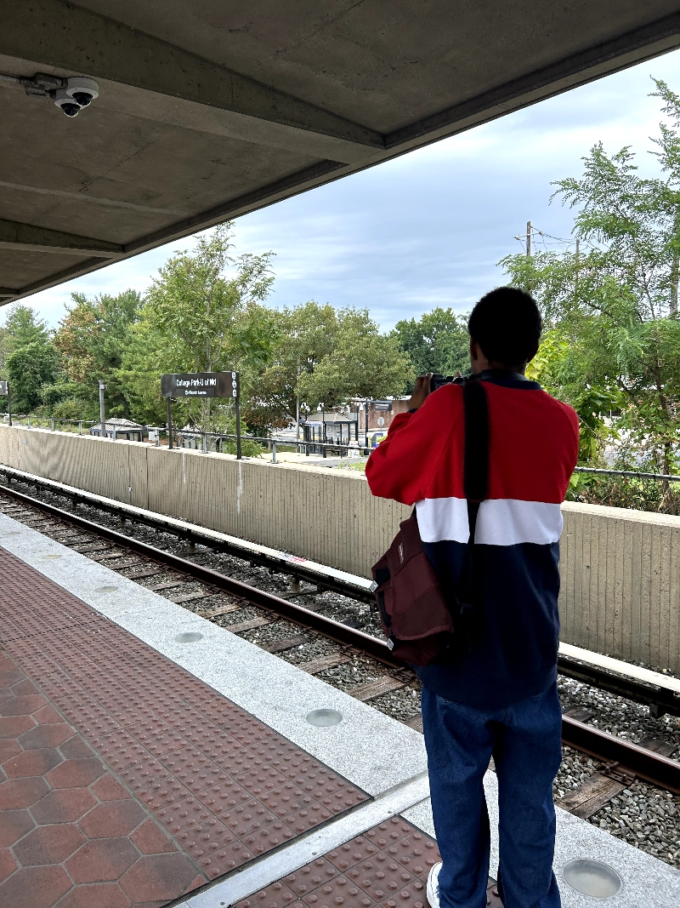

By David Smith
December 12, 2023
Nearly six months after being implemented, the latest Metro anti-fare evasion measure has garnered overall positive reviews.
In July, Washington Metro Area Transit Authority announced plans for the installation of anti-fare hopping measures across ten metro stations, and fully implemented the transition to six. The new plan modified the standard 28-inch, retracting faregates, to 55-inch swinging doors, according to the WMATA press release in July.
(Old metro faregate - credit: DC News Now; New metro faregate - credit: WJLA;)
Fare evasion has long been a problem for WMATA. In 2022, the WMATA lost out on approximately $40 million in revenue directly due to fare evasion, a number they view as a conservative estimate, according to a press release. In November of 2022, WMATA undertook a campaign against fare evasion, threatening an increased emphasis on fining fare evaders after a month-long period of warning.
“Over the past several months, our team has been testing different prototypes to get to this final design. We have already seen a reduction in fare evasion and expect the higher gates will be more of a deterrent,” said Metro General Manager and Chief Executive Officer, Randy Clarke in a press release. “The bottom line is fare evasion is not okay, and we will continue our efforts to ensure everyone is respecting the community’s system and each other.”
Since the end of June, the last full month without the new measures, “no-tap ridership” across all stations has gone down 12 percent, according to data collected by the WMATA. No-tap ridership is how WMATA categorizes unpaid riding. When delving more specifically to the stations with the new anti-fare evasion measures, the decrease spikes to 70 percent, according to WMATA, signaling a successful effort.
Despite the decrease in fare evading, there are people that see the new measures as unnecessary, and at times, discriminatory.
“I just think about who suffers the most out of this,” said Kai Bradner, a University of Maryland student, and a DC native. “It’s probably people who struggle to pay anyway.”

(Bradner taking a picture of the Metro tracks as he waits for a train. Source: David Smith)
However, the WMATA would have an answer for that question, likely pointing hypothetical financially restricted passengers towards the recently approved “Metro Lift” initiative. The initiative offers low-income passengers—defined as those who qualify for the Supplemental Nutritional Assistance Program (SNAP)—fare at half price. Nearly half of MetroBus riders and approximately 15 percent of Metrorail riders are eligible for the program, valuing nearly $4 million out of WMATA’s bottom line.
In addition to this, WMATA has various other existing programs in place that either, offer reduced fare or completely waive it. These programs encompass DC students, senior citizens and disabled riders, some of which would be twice-covered by the SNAP eligibility.
Overall, many people found no issue with the increased anti-fare evasion measures.
“I don’t really blame them for trying to enforce things more,” said Alex Nafarrete, who was in DC visiting a friend for the weekend. “I go to school in New York, so I’m used to having to pay for the subway. It’s not something I get excited to do but I understand they need money to keep things running.”
And that particular sentiment is essentially why WMATA plans to incorporate these anti-fare evasion methods on an even wider scale. WMATA has a near $185 million shortfall to make up, according to a press release, and the easiest way to do that is make sure ride fares are properly enforced.
© 2023 David Smith